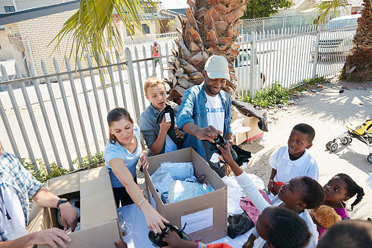

<div class="container">


  <div class="card transition"><p><i><br><br> &nbsp;&nbsp;&nbsp;&nbsp;Offering help to poor and needy is 
    all about offering voluntary help. If you are blessed with resources, then it becomes your duty to offer
     to help hand to poor people. There are many different ways in which help can be offered,
     to the right person who is in need.People who lack resources can provide help in any form education or support.
     If you have access to resources, then you can be a part of sharing with them.

       Join Donation Campaign in Delivering Happiness, today.</i></p>
      <h2 class="transition"><h3 class="title" style="color: rgb(51, 28, 28);">clothes Donation</h3><br>
          <br><small>Take a bite out of hunger.</small></h2>
      <div class="cta-container transition" ><a  class="cta"  routerLink="/signup" routerLinkActive="active">Donate</a></div>
      <div class="card_circle transition"></div>
    </div>
    
    
  
  
  
  </div>